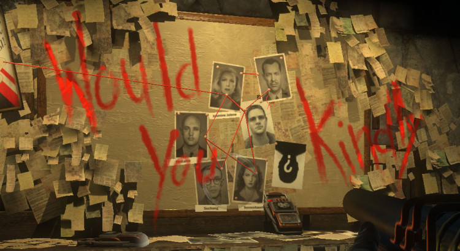
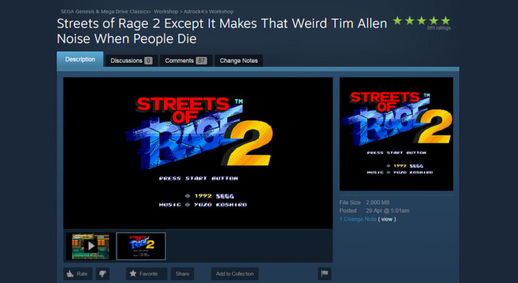
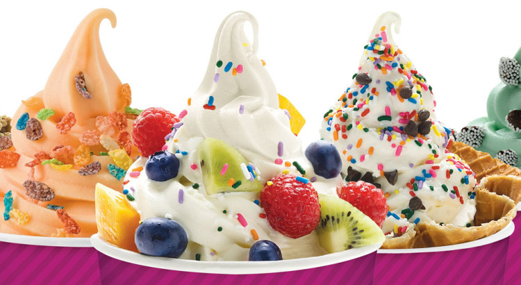

We Press Play: Episode #26
May 10, 2016
Night gathers, and now my watch begins – for this beta, and all the patches to come. That’s right folks, the weekend-long Overwatch open beta is wrapping up – and we’ve all been playing it to death! We’ve also got fresh candle tips, advice about how to download your way into a Telstra job, grey-ware CD-Key sites, and the age old question: would you rather be always yelling, or always whispering? Find out the answers to all these figurative interrobangs above!
Show Notes +
Show Notes -
- test
- test
- test
- test
- test
- test
- test

We Press Play: Episode #25
May 4, 2016
Come on and SLAM, and welcome to the 25th Episode of We Press Play! To celebrate, both Dota 2 and Rocket League were updated (on the same day, no less) – and we’ve got the hot scoops on the additions! Also in this episode – poop emoji announcements, the slow-motion car crash that is E3 2016, hot Nintendo news, yet another game-launcher to add to the pile, tutorialization, and MUCH MUCH MORE.
Show Notes +
Show Notes -

We Press Play: Episode #24
April 27, 2016
Think that’s air you’re breathing now? Wrong! It’s a podcast! We’ve got hot Playstation Neo news, reasons why Alex St. John is a terrible person, Froyo tips, questions about how much eSports is too much, VR pricing, a Dark Souls check-in (plus Board-game update), and much, much more. Check it out above!
Check it out above!
Show Notes +
Show Notes -
{kind=link}